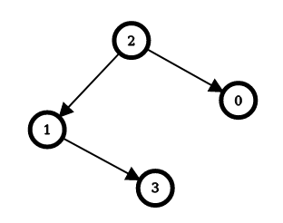
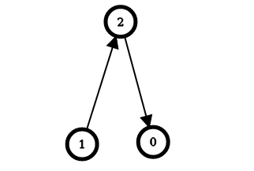

| Category | Difficulty | Likes | Dislikes |
|---|---|---|---|
| Algorithms | Hard | 387 | 8 |
microsoft | uber | cashfree | paypal | mathworks | meesho
There is a simple directed graph with n nodes labeled from 0 to n - 1. The graph would form a tree if its edges were bi-directional.
You are given an integer n and a 2D integer array edges, where edges[i] = [ui, vi] represents a directed edge going from node ui to node vi.
An edge reversal changes the direction of an edge, i.e., a directed edge going from node ui to node vi becomes a directed edge going from node vi to node ui.
For every node i in the range [0, n - 1], your task is to independently calculate the minimum number of edge reversals required so it is possible to reach any other node starting from node i through a sequence of directed edges.
Return an integer array answer, where answer[i] is the minimum number of edge reversals required so it is possible to reach any other node starting from node i through a sequence of directed edges.
Example 1:

Input: n = 4, edges = [[2,0],[2,1],[1,3]]
Output: [1,1,0,2]
Explanation: The image above shows the graph formed by the edges.
For node 0: after reversing the edge [2,0], it is possible to reach any other node starting from node 0.
So, answer[0] = 1.
For node 1: after reversing the edge [2,1], it is possible to reach any other node starting from node 1.
So, answer[1] = 1.
For node 2: it is already possible to reach any other node starting from node 2.
So, answer[2] = 0.
For node 3: after reversing the edges [1,3] and [2,1], it is possible to reach any other node starting from node 3.
So, answer[3] = 2.Example 2:

Input: n = 3, edges = [[1,2],[2,0]]
Output: [2,0,1]
Explanation: The image above shows the graph formed by the edges.
For node 0: after reversing the edges [2,0] and [1,2], it is possible to reach any other node starting from node 0.
So, answer[0] = 2.
For node 1: it is already possible to reach any other node starting from node 1.
So, answer[1] = 0.
For node 2: after reversing the edge [1, 2], it is possible to reach any other node starting from node 2.
So, answer[2] = 1.
Constraints:
2 <= n <= 105edges.length == n - 1edges[i].length == 20 <= ui == edges[i][0] < n0 <= vi == edges[i][1] < nui != vi